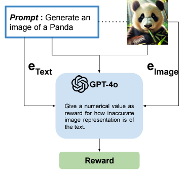

LLM-Assisted Red Teaming of Diffusion Models through "Failures Are Fated, But Can Be Faded"

Summary
This extension of Failures Are Fated applies the framework to text-to-image diffusion models, using LLM-assisted generation of rewards and states and reinforcement learning search strategies to make discovery of failure modes more efficient.
BibTeX
@inproceedings{sagar2024llm,
title={LLM-Assisted Red Teaming of Diffusion Models through "Failures Are Fated, But Can Be Faded"},
author={Sagar, Som and Taparia, Aditya and Senanayake, Ransalu},
booktitle={Red Teaming GenAI: What Can We Learn from Adversaries?},
year={2024}
}